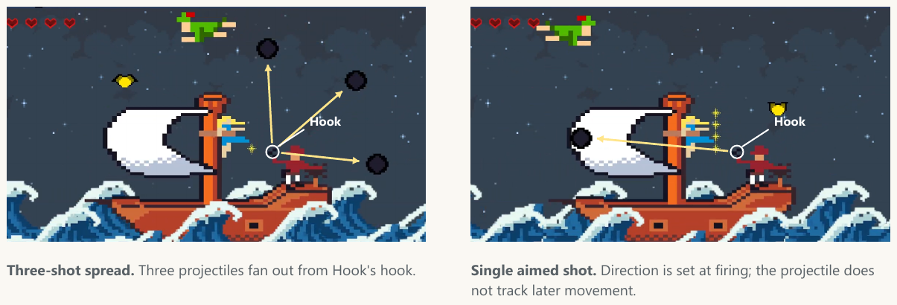
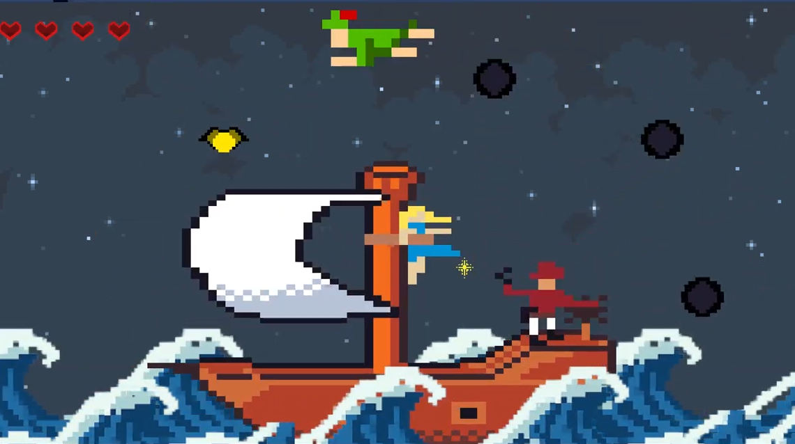
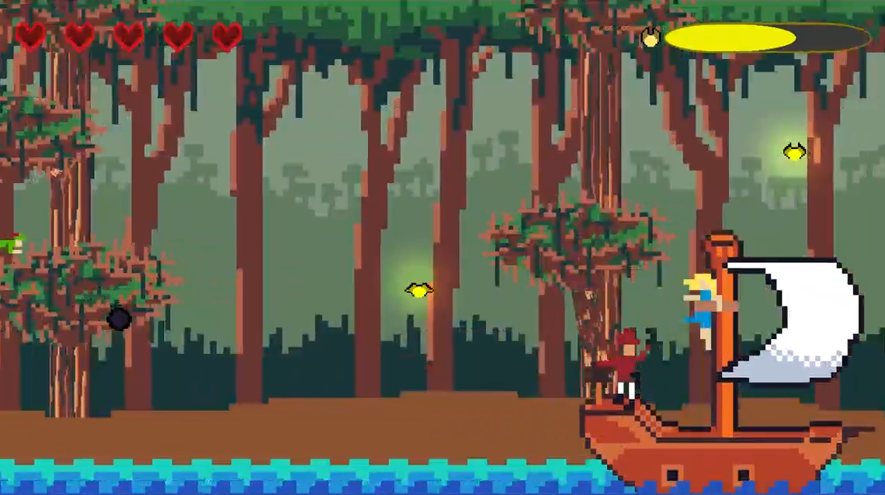

Peter Pan
A boss fight built around rescue.
October–December 2025
Overview
- My role
- Designed and built the boss encounter, projectile patterns and Wendy’s rescue system.
- What changed
- The first single-shot pattern felt too easy. I added spread and homing projectiles.
- What players did
- Players began looking for gaps between shots. They said the difficulty felt better and the fight was more fun.
Two ways to dodge
Select a screenshot to see the full comparison.

Creates several paths to dodge.
Direction is set when the shot fires.
The rescue goal
Collect fairy dust and carry it to Wendy to build rescue progress while avoiding the shots.
Designing the rescue
Rescue without attacking
The non-attacking premise was a shared team decision. I designed the boss encounter around collecting dust, moving through projectile patterns and delivering it to Wendy.
What still needed clarity
Some players did not know where to bring the dust. Explaining the victory condition in person helped them understand the rescue goal.
Team & tools
Made with Chris Cox. I owned the boss encounter; AI assisted parts of the projectile code. The game uses third-party visual and audio assets.

